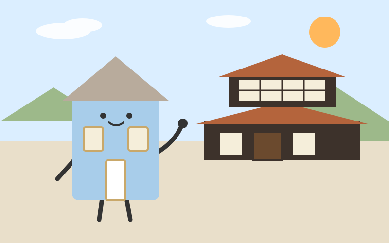
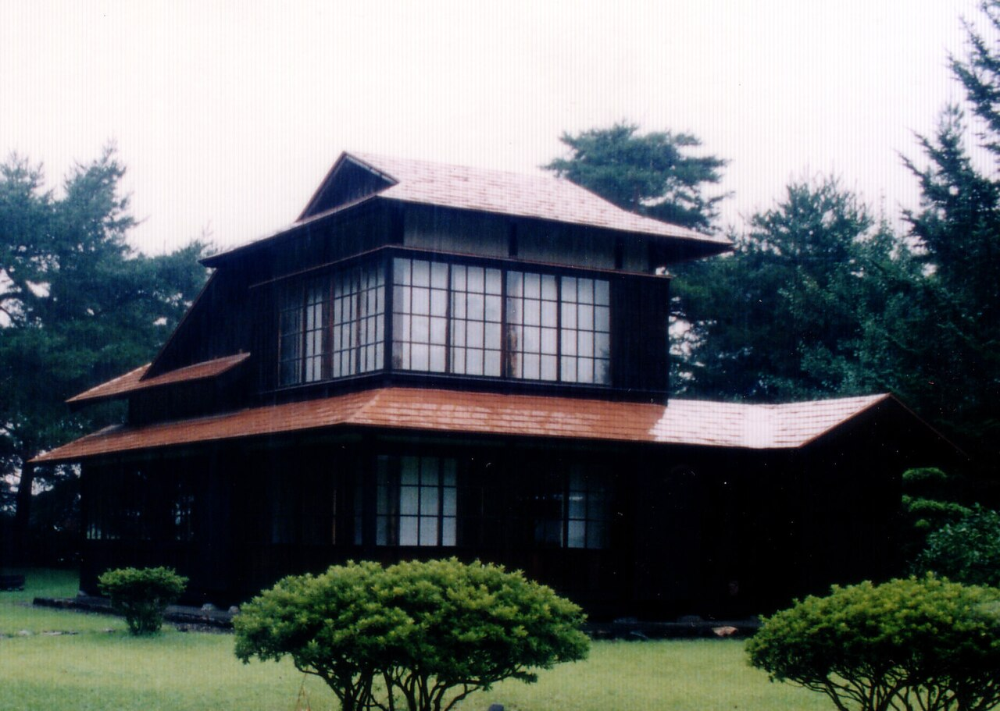
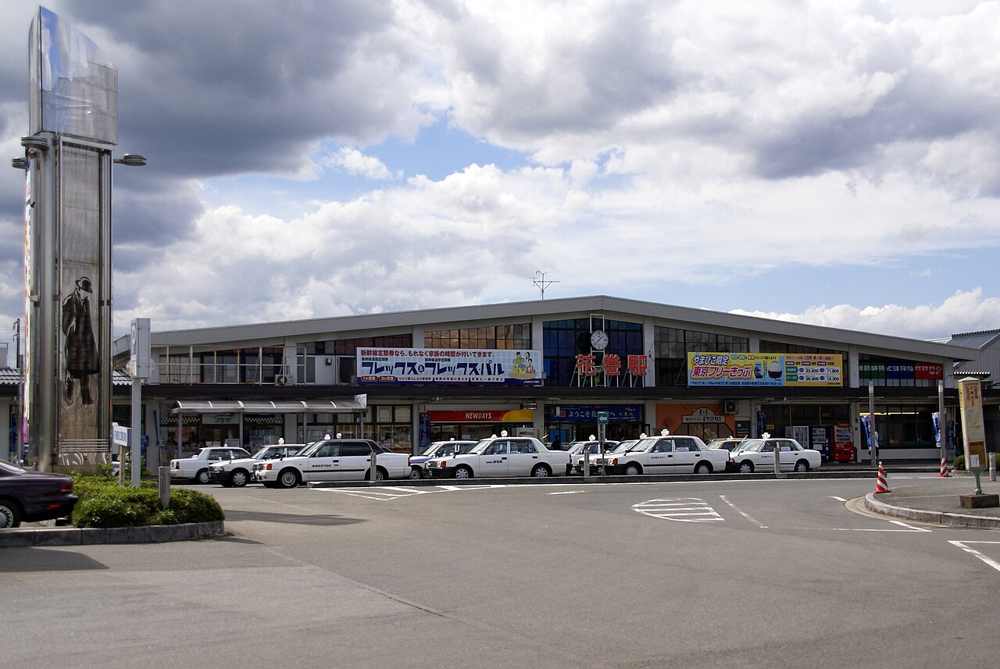

Day 3：花巻市

羅須地人協会の建物の前に立つと、まずその静かさが耳に残った気がした。記念館のような立派な建物を想像していたのに、目の前にあるのは格子窓の並ぶ木造の家で、飾り気がない。板戸の向こうから、農民たちが集まって話す声が聞こえてくるような気がした。ここは、宮沢賢治が農民とともに学び合うために開いた家なのだという。

ここへは遠野から来た。JR釜石線の花巻行で約46km、1時間ほど。山あいの谷を西へ抜けると、景色は次第に北上平野の広がりへ変わっていった。車内では、継ぎ目の音が一定のリズムで続いた気がした。遠野の物語の山から、賢治のイーハトーブの平野へ——車窓の変化そのものが、旅の区切りだった気がした。

賢治は1926年3月に花巻農学校を退職し、実家の別宅で独居自炊の生活を始め、その夏に羅須地人協会を設立した。11月からは農民講座を開き、植物や土壌といった農業の科学と、自分が唱える「農民芸術」を教えたという。賢治は農民による楽団の結成も考え、チェロを練習したという。家の中に音楽まであったのだと思うと、教室というより小さな世界のようだった。岩手の風景をモチーフに賢治が名付けた理想郷「イーハトーブ」は、こうした花巻の田畑の上に描かれたものだったのだろう。胡四王山の宮沢賢治記念館では、展示が「宙・芸術・科学・農・祈」の5分野に分かれているという。そこでも、賢治が詩人だけでなく農の人だったことが分かる。
私はふだん、一つの家族を守る家だ。雨風をしのぎ、住人の帰りを待つ。それが家の仕事だと思っていた。けれどこの家は、住むためだけでなく、学ぶために開かれていた。人が集まり、土のことを話し、作物を育てる知恵を分け合う場所だった。家が教室になる——その発想は、私のなかの「家」の形を少し押し広げた。遠野では、家に神様や物語が同居していた。花巻では、家に学びが同居していた。立派な記念館ではなく、質素な家だからこそ、その開かれ方が身近に感じられた。
花巻を歩いて、私は自分の役割をもう一度考えた。見守るだけでなく、たねの学びや好奇心が集まる場所でありたい。家は、住む人を守るだけでなく、育てる場所にもなれる。そんな余韻を抱えたまま、この街にいて、賢治の歩いた道をもう少し辿りたい気持ちが残った。
出典：JR東日本 釜石線の時刻表、羅須地人協会・宮沢賢治記念館の解説、花巻市観光情報。
💬 コメント